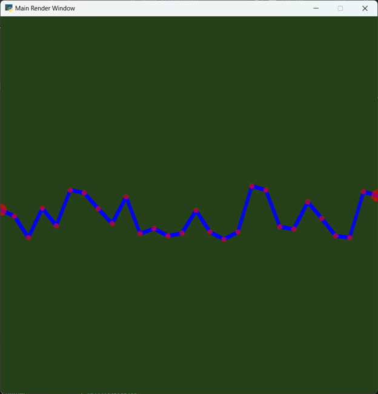
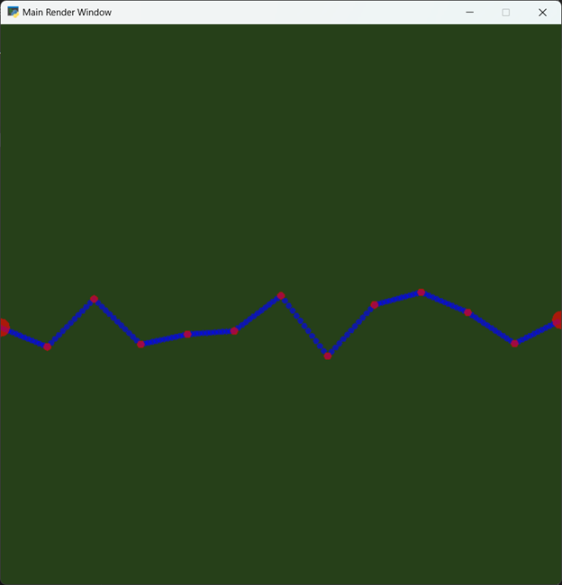
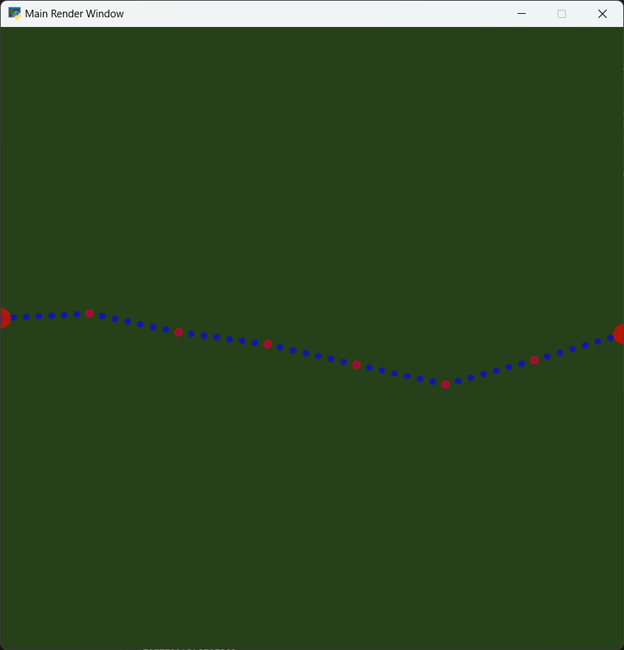

A basic perlin noise implementation that determines the 'height' of the given terrain. The simulation can be a low resolution or high resolution with high resolution which basically determines the number of columns. You may also adjust the sample height frequency which determines how often noise is used with a higher frequency value lowering the amount of variance due to less samples being taken.
Perlin noise generated with 144 resolution between 0.4 and 0.55 elevation with 3 different frequencies.
Frequency 1.5

Frequency 2.0

Frequency 2.5
